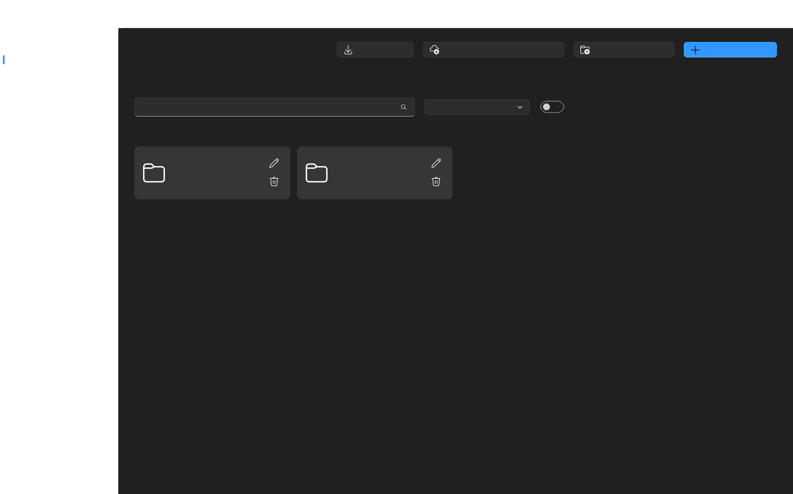

NexTerm
A fast Windows SSH/SFTP workspace with host groups, TCP tunnels, Termius migration and a polished Fluent interface.

SSH Terminal
Tabbed sessions, reconnect, snippets, mouse support and tuned rendering.
SFTP Workspace
Two-panel file management with drag-and-drop transfers.
TCP Tunnels
Expose local web or raw TCP services through a VPS.
Windows Ready
Autostart, notifications, update checks and packaged releases.